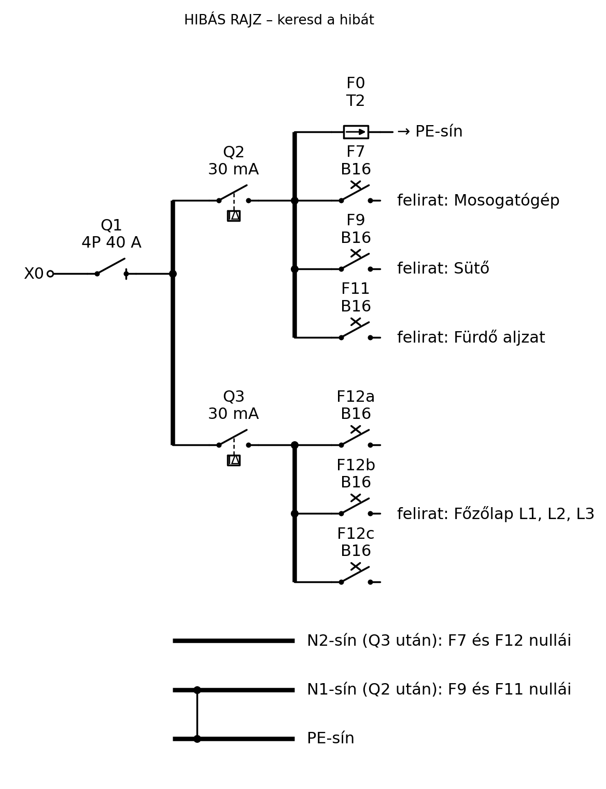

A kapcsolódó elmélet: tankönyv, 17.3 alfejezet.
Értékeld a Mintaház +E1 elosztójának hat körét és két FI-jét a Jegyzőkönyv, szabványossági felülvizsgálat és hibakeresés (tankönyv, 24.4) alfejezet jegyzőkönyv-mintájának oszlopaival. Az adatok kitalált gyakorló adatok, nem valós mérés. A méréseket a Mérések I.: folytonosság, szigetelési ellenállás, földelés (tankönyv, 24.2) és a Mérések II.: hurokimpedancia, zárlati áram, FI-vizsgálat (tankönyv, 24.3) alfejezet, a kitöltés gyakorlatát a Védelmi mérések gyakorlata és a jegyzőkönyv kitöltése (tankönyv, 42.2) alfejezet tanítja. A hálózati hurokimpedancia , . Üres lap: Nyomtatható jegyzőkönyvek és sablonok (tankönyv), A3 és A4.
Határértékek (mind ellenőrizendő: MSZ HD 60364-6, -4-41):
| Kör | Védelem | FI | (Ω) | L–N / L–PE / N–PE (MΩ) | mért (Ω) |
|---|---|---|---|---|---|
| F1 | B10 | Q2 | 0,29 | > 200 / 250 / > 200 | 0,92 |
| F3 | B16 | Q2 | 0,35 | > 200 / 180 / > 200 | 1,05 |
| F4 | B16 | Q3 | 0,43 | > 200 / 0,6 / > 200 | 1,20 |
| F8 | B16 | Q3 | 1,35 | > 200 / 120 / > 200 | 3,10 |
| F12 | 3P B16 | Q3 | 0,25 | > 200 / 200 / > 200 | 0,85 (legrosszabb fázis) |
| F14 | B16 | Q3 | 0,62 | > 200 / 2,5 / > 200 | 1,60 |
| FI | Kioldási áram (mA) | Kioldási idő -nél (ms) |
|---|---|---|
| Q2 | 22 | 28 |
| Q3 | 24 | 340 |
Feladatod: minden körnél írd ki a korrigált -t, a határértéket, az „Értékelés” (megfelel / nem felel meg) és a „Teendő” oszlopot; értékeld a két FI-t; végül döntsd el, átadható-e a berendezés. A megoldókulcs a „Megoldások” végén található.
Cél: egy lakáselosztó szakszerű bekötése, feliratozása és átadás előtti ellenőrzése tanműhelyi környezetben.
Eszközök és anyagok: lakáselosztó doboz, DIN-sínes készülékek (főkapcsoló, FI-relé, néhány kismegszakító), N- és PE-sín, vezetékek (1,5 és 2,5 mm²), érvéghüvelyek, jelölőgyűrűk, csavarhúzók, nyomatékkulcs, lehúzó, krimpelő, multiméter, szigetelési ellenállásmérő, feszültségvizsgáló, feliratok.
Biztonsági korlát. A feladat tanműhelyi (törpefeszültségű) környezetre vagy jogosult oktató felügyeletére vonatkozik; hálózati feszültségen önállóan ne végezd. A munkavégzés előtt mindig alkalmazd a feszültségmentesítés öt biztonsági szabályát.
Lépések:
Ellenőrzési pontok: a vezetékek színhelyesek, a FI-relé utáni nulla nem keveredik a védővezetővel, a csavarkötések nem lazák, a feliratok egyértelműek, a mérési értékek a szabvány szerint megfelelőek.
Dokumentálás: készítsd el a kapcsolási rajzot, áramkörjegyzéket, mérési jegyzőkönyvet; ezeket fűzd a szerelési naplóhoz.
1. feladat (A) Sorold fel a lakáselosztó szerelésének 5 fő lépését.
2. feladat (A) Mi az áramkörjegyzék, és milyen adatokat tartalmaz?
3. feladat (B) Egy kapocs gyártói adatlapja szerint a 2,5 mm²-es vezetőre 1,0 N·m nyomatékot kell alkalmazni. A szerelő nyomatékkulcsa nincs kalibrálva. Mit kell tennie, és miért?
4. feladat (B) Adott egy 3×2,5 mm²-es kábel, külső átmérője 11 mm. Mekkora a minimális belső hajlítási sugár, ha a kábelgyártó a 4D hajlítást engedélyezi? (D a kábel külső átmérője.)
5. feladat (C) Egy elosztóban a FI-relé leold, ha a fürdőszobai világítást bekapcsolják. A hibakeresés során kiderül, hogy a világítási áramkör nulla vezetékét a FI-relé utáni N-sínre kötötték, de a fázisvezetőjét a FI-relé előtti fázisgyűjtőről táplálták. Magyarázd el, miért old le a FI-relé, és hogyan javítanád a hibát.
6. feladat (D) Tanműhelyi gyakorlat: építs egy lakáselosztó modellt egy főkapcsolóval, egy FI-relével és két kismegszakítóval (pl. világítás, aljzat). A bekötés után végezd el a védővezető folytonosságának mérését, és dokumentáld az áramkörjegyzékben a vezetékek színét és keresztmetszetét. Írd le a mérés lépéseit és a várt eredményt.
7. feladat (C) Átadás előtt összevetsz egy elosztórajzot a Lakás- és épületelosztó felépítése (tankönyv, 17.2) alfejezet körtáblájával és a fenti áramkörjegyzékkel. A rajz egy kivágat: keresd meg az öt beépített hibát, mondd meg mindegyik következményét és javítását.

Önellenőrzés – válaszok
1. feladat (A)
A fő lépések: (1) feszültségmentesítés és biztosítás, (2) készülékek és
sínek felszerelése, (3) vezetékek előkészítése és bekötése, (4)
csavarnyomaték ellenőrzése, (5) feliratozás és mérések.
2. feladat (A)
Az áramkörjegyzék a készülékek és az áramkörök azonosítását szolgáló
táblázat. Tartalmazza a készülék jelét (pl. F1), típusát/értékét (pl.
B16), az áramkör megnevezését (pl. nappali aljzatok) és a vezeték
keresztmetszetét.
3. feladat (B)
Ha a nyomatékkulcs nincs kalibrálva, nem használható megbízhatóan, mert
a beállított nyomaték nem garantált. A szerelőnek kalibráltatnia kell a
kulcsot, vagy másik, kalibrált nyomatékkulcsot kell használnia. A nem
megfelelő nyomaték laza vagy túl szoros kötést okoz, ami
balesetveszélyes.
4. feladat (B)
A minimális belső hajlítási sugár
.
Tehát a kábelt legalább 44 mm belső sugárral kell hajlítani.
5. feladat (C)
A FI-relé a fázis- és a nullavezető áramainak különbségére érzékeny. Ha
a fázist a FI elé kötik, a nullát pedig a FI után, akkor a FI-n csak az
áramkör N-vezetője halad át, a fázisáram megkerüli. A FI ezért a teljes
visszatérő terhelőáramot differenciaáramnak látja: pl. 100 W-os
világításnál
,
ez a 30 mA-es küszöb sokszorosa, így a FI bekapcsoláskor azonnal kiold.
Javítás: a világítás fázisát is a FI-relé utáni fázisgyűjtőről kell
táplálni, hogy az áramkör mindkét pólusa a FI-relén át haladjon.
6. feladat (D)
A várható mérési lépések: feszültségmentesítés, a védővezető
folytonosságának mérése a fő földelőkapocstól a fogyasztói
védőérintkezőig. A mérésnek alacsony ellenállást kell mutatnia
(általában <1 Ω, a vezeték hosszától és keresztmetszetétől függően).
A dokumentációban rögzíteni kell a mért értéket, a mérési pontokat és a
műszer típusát.
7. feladat (C)
| Hiba | Következmény | Javítás |
|---|---|---|
| F7 nullája az N2-sínen (F7 a Q2 mögött van) | a mosogatógép bekapcsolásakor Q2 és Q3 kiold | a nulla az N1-sínre |
| F12 három egypólusú kismegszakítón | hiba esetén csak egy fázis bont, a készülék részben feszültség alatt marad | egy 3P B16 kismegszakító |
| F0 a Q2 mögött | a levezetett áramot a FI hibaáramnak látja, kiold és terhelődik; a Q3 csoport sincs így tervezetten védve | F0 a Q1 után, a FI-k elé |
| N1-sín és PE-sín összekötve | üzemi áram a PE-n, a Q2 kiold, a hibavédelem sérül | az összekötés eltávolítása |
| az F9 és az F11 felirata felcserélve | hibakereséskor rossz kört kapcsolnak le | F9: Fürdő aljzat, F11: Sütő |
Gyakorló feladat: a mintaház átadási jegyzőkönyve – megoldókulcs (kitalált adatok; a határértékek ellenőrizendők)
| Kör | korr. / határ (Ω) | Értékelés | Teendő |
|---|---|---|---|
| F1 | 1,10 / 4,6 | megfelel | – |
| F3 | 1,26 / 2,875 | megfelel | – |
| F4 | 1,44 / 2,875 | nem felel meg ( L–PE 0,6 MΩ < 1 MΩ) | szakaszolás kötődobozonként, nedves doboz vagy sérült ér keresése, javítás |
| F8 | 3,72 / 2,875 | nem felel meg ( túl nagy) | kötések ellenőrzése, mérése szakaszonként (laza kötés, túl hosszú vagy kis keresztmetszetű vezeték) |
| F12 | 1,02 / 2,875 | megfelel | – |
| F14 | 1,92 / 2,875 | megfelel | megjegyzés: a kültéri kör szigetelése (2,5 MΩ) a többinél jóval kisebb, nedvesség figyelendő |
Q2 (22 mA, 28 ms): megfelel. Q3 (24 mA, 340 ms): nem felel meg, mert a kioldási idő 300 ms-nál hosszabb; a FI-t cserélni kell, majd újramérni. Összegzés: három hiba (F4, F8, Q3) miatt a berendezés nem adható át. A javítás után az érintett méréseket meg kell ismételni (Q3 cseréje után a Q3 minden vizsgálatát), és a jegyzőkönyvet ki kell egészíteni.
Példa. Egy elosztó sorkapcsába 2,5 mm²-es vezetőket kell bekötni. A kapocsgyártó adatlapja szerint a megfelelő nyomaték 1,0 N·m. A szerelő a nyomatékkulcsot 1,0 N·m-re állítja, és minden egyes csavart ezzel húz meg, amíg a kattanás jelzi a beállított értéket. Ha nincs nyomatékkulcs, nyomatékcsavarhúzót (beállítható nyomatékú csavarhúzót) használj; a gyártók a megadott nyomaték betartását írják elő, ezért elosztóban a nyomatékszerszám használata a jó gyakorlat (ellenőrizendő: gyártói szerelési utasítás).
Áramkörjegyzék példa: (A könyv épületvillamossági rajzain a főkapcsoló Q1, a FI Q2, Q3 …, a kismegszakító F1, F2 … – ugyanígy a Lakás- és épületelosztó felépítése (tankönyv, 17.2) alfejezetben is. Más terveken a kismegszakító Q, a FI F betűjelet is kaphat – ellenőrizendő: MSZ EN IEC 81346-2 –, ezért a terv jelmagyarázata a mérvadó; egy dokumentáción belül egységesen kell eljárni.)
A Mintaház teljes áramkörjegyzéke (a Lakás- és épületelosztó felépítése (tankönyv, 17.2) alfejezet Lakás- és épületelosztó felépítése-4 kapcsolási rajzával és körtáblájával egyezik):
| Készülék | Típus/érték | Fázis | FI-csoport | Áramkör | Kábel | X1 kapocs | Kábeljel |
|---|---|---|---|---|---|---|---|
| Q1 | főkapcsoló 4P 40 A | L1–L3, N | – | bejövő táp (X0) | 5×10 mm² | – | W0 |
| F0 | túlfeszültség-levezető T2, 3+1 | L1–L3, N → PE | – (a FI előtt) | túlfeszültség-védelem | – | – | – |
| Q2 | FI 4P 40 A / 30 mA, A típus | L1–L3, N1 | Q2 | 1. FI-csoport | – | – | – |
| Q3 | FI 4P 40 A / 30 mA, A típus | L1–L3, N2 | Q3 | 2. FI-csoport | – | – | – |
| F1 | kismegszakító B10 | L1 | Q2 | Világítás 1 (előszoba, nappali, konyha, terasz) | NYM-J 3×1,5 | X1:1 | W1 |
| F2 | kismegszakító B10 | L2 | Q3 | Világítás 2 (hálók, fürdő, WC, közlekedő, kamra) | NYM-J 3×1,5 | X1:8 | W2 |
| F3 | kismegszakító B16 | L3 | Q2 | Aljzatok: nappali, előszoba | NYM-J 3×2,5 | X1:2 | W3 |
| F4 | kismegszakító B16 | L1 | Q3 | Aljzatok: hálószobák | NYM-J 3×2,5 | X1:9 | W4 |
| F5 | kismegszakító B16 | L2 | Q2 | Konyhai pult aljzatai | NYM-J 3×2,5 | X1:3 | W5 |
| F6 | kismegszakító B16 | L3 | Q3 | Hűtő + páraelszívó | NYM-J 3×2,5 | X1:10 | W6 |
| F7 | kismegszakító B16 | L3 | Q2 | Mosogatógép | NYM-J 3×2,5 | X1:4 | W7 |
| F8 | kismegszakító B16 | L1 | Q3 | Mosógép 2,2 kW (változat: RCBO F típus) | NYM-J 3×2,5 | X1:11 | W8 |
| F9 | kismegszakító B16 | L2 | Q2 | Fürdő/WC aljzatok + törölközőszárító | NYM-J 3×2,5 | X1:5 | W9 |
| F10 | kismegszakító B16 | L3 | Q3 | Bojler 2 kW | NYM-J 3×2,5 | X1:12 | W10 |
| F11 | kismegszakító B16 | L1 | Q2 | Sütő 3,5 kW | NYM-J 3×2,5 | X1:6 | W11 |
| F12 | kismegszakító 3P B16 | L1–L3 | Q3 | Főzőlap 7,2 kW | NYM-J 5×2,5 | X1:13 | W12 |
| F13 | kismegszakító B16 | L2 | Q2 | Klíma 0,9 kW (felvett) | NYM-J 3×2,5 | X1:7 | W13 |
| F14 | kismegszakító B16 | L2 | Q3 | Kültéri aljzat (terasz) | NYM-J 3×2,5 | X1:14 | W14 |
| F15 | kismegszakító 3P C25 | L1–L3 | – (N0) | Kerti műhely (+E2) leágazása, 30 m földben | NYY-J 5×6 | X1:15 | W15 |
| F16 | kismegszakító 3P B16 | L1–L3 | – (N0) | Napelem-inverter 4 kWp (háromfázisú) | NYM-J 5×2,5 | X1:16 | W16 |
A jegyzék a szekrényben így jelenik meg: a frontnézeti (elrendezési) rajz a négy 12 modulos sort mutatja a készülékek helyével, a feliratsáv tényleges szövegével (jel, rövid név, fázis), a fésűs sínekkel, a nullasínekkel és a sorkapocs-sorral.
Kidolgozott eset (példaadatok). A mintaház régi hálózatából a felújítás végéig megtartott kamrai körben az N kikötése után a szerelő N–PE között 0 Ω-ot mér. Hipotézis: valahol átkötés van. A körhöz tartozó dobozokat a betáplálás felől haladva bontja meg, és minden bontás után újramér; az érték akkor ugrik a méréshatár fölé, amikor az utolsó előtti aljzat leválik. Ok: az aljzatban a védőérintkezőt egy rövid huzaldarab kötötte a nullához, miközben egy korábbi bővítés PE-ere is ide futott. Javítás: az átkötés eltávolítása, a PE folytonosságának ellenőrzése a PE-sínig, majd N–PE szigetelési ellenállás újramérése (> 200 MΩ). A kör csak ezután kerülhet a FI-csoport N-sínjére.